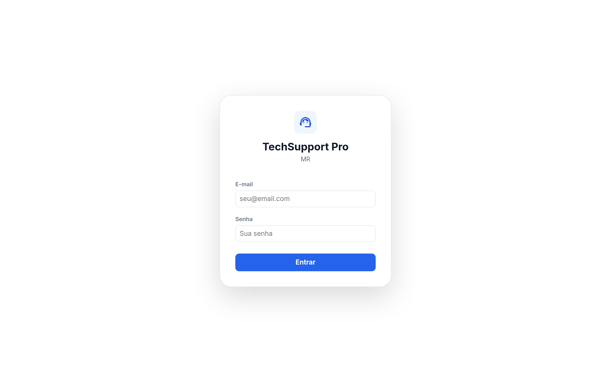
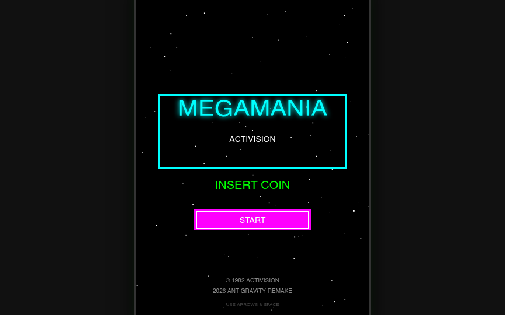
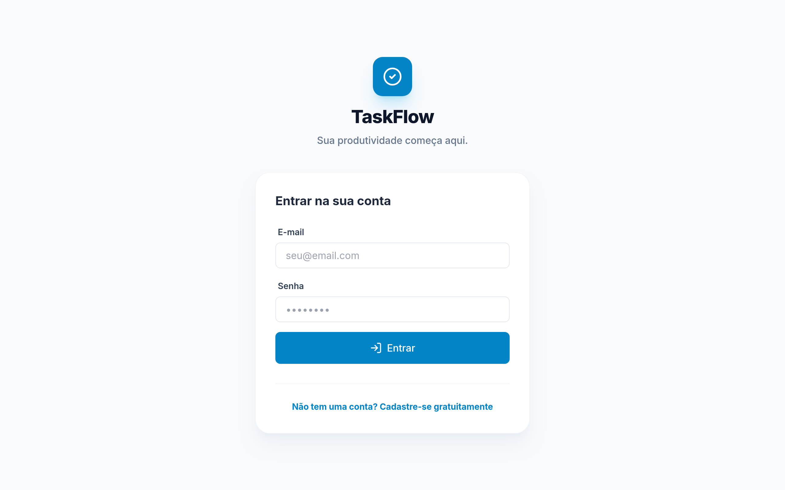
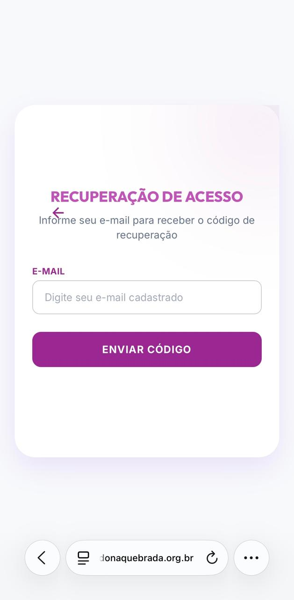
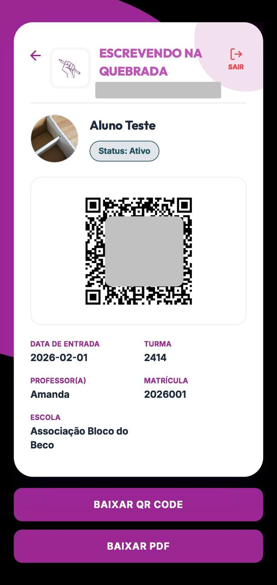
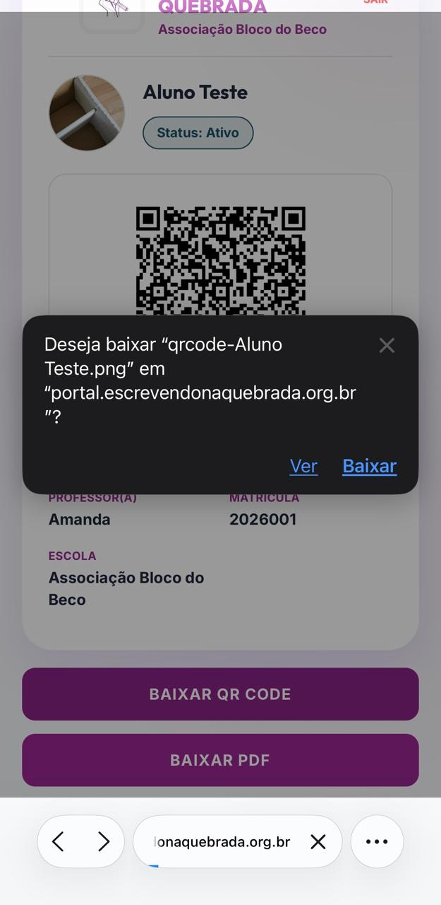
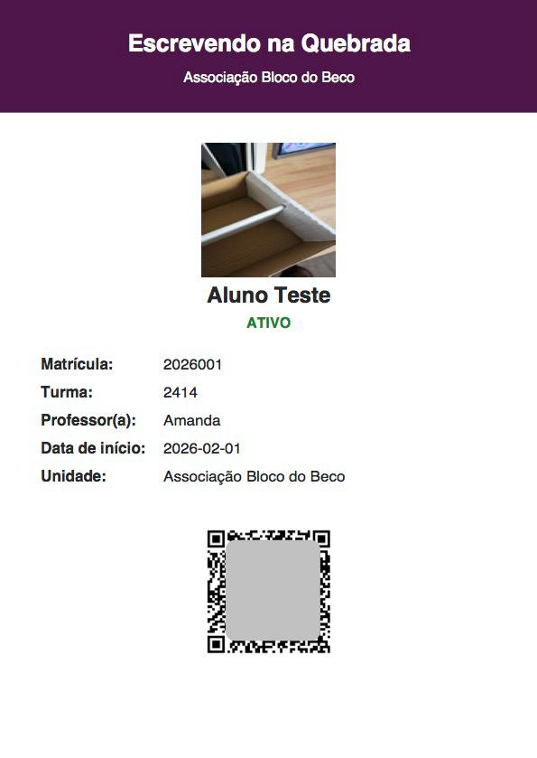
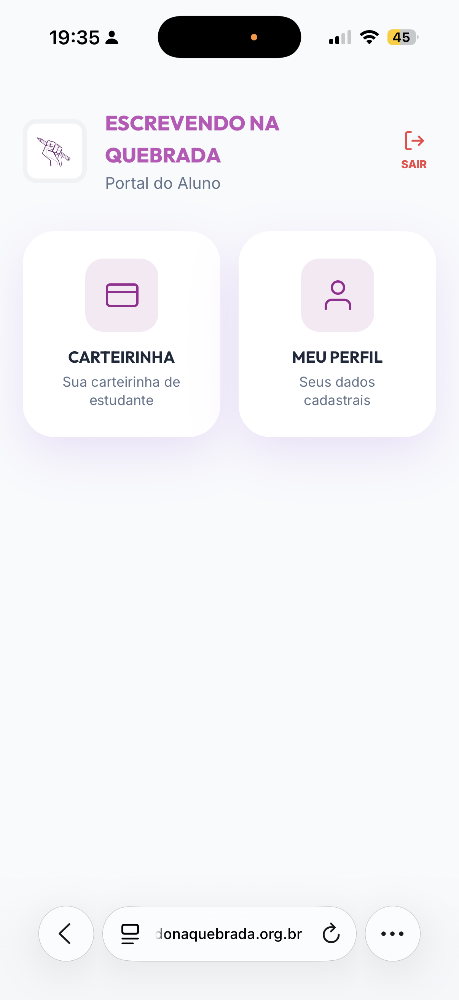

Mariana Regina Ferreira
Especialista em BI | Dados | IA & Automação
Especialista em BI | Dados | IA & Automação
Tenho 22 anos, sou paulistana. Formada em TADS pelo SENAC, com perfil analítico e proativo focado em performance.
Analista de Dados com experiência em dashboards estratégicos, automação de processos e análise exploratória orientada a resultados.
Domínio de SQL, Python, Databricks e ambientes Cloud (AWS Athena/QuickSight). Aplico Scrum e Kanban no dia a dia.
Entusiasta de Inteligência Artificial Generativa, buscando sempre gerar insights acionáveis para otimizar a tomada de decisão.
Analista Administrativo de Operação II
Atuação no desenvolvimento de BI para áreas internas e parceiras (Itaú Agências, Acelen, Time Pepsico).
Estagiária - Área de Recuperação de Crédito (Varejo)
Atendimento ao público PF e PJ e suporte estratégico à área.
Aprendiz - Assistente Administrativo - Central de Atendimento ao Docente (CARD)
Atuação oferecendo suporte às equipes acadêmicas e administrativas, garantindo eficiência, agilidade e organização nas demandas diárias.
SENAC - Centro Universitário
2022 - 2024
Concluído em 07/2022
Concluído em 08/2022
Concluído em 03/2025
Concluído em 05/2025
Concluído em 02/2026
Concluído em 05/2026
Concluído em 05/2026
Concluído em 05/2026
Concluído em 06/2026
Experiência Internacional - (06-09/2025)



Controle operacional completo com acompanhamento de status, gestão de prioridades e organização de demandas em tempo real. Integrado com Supabase.

Remake do clássico jogo arcade MegaMania, desenvolvido com foco em lógica de programação e interface gráfica.

Aplicação moderna de gestão de tarefas com autenticação de usuários, CRUD completo e persistência de dados por perfil. Construído com React + Supabase.
Projeto focado em melhoria de código e arquitetura, aplicando padrões de desenvolvimento modernos e limpos.

Site profissional para fonoaudiologia com interface moderna, responsiva e acessível. HTML, CSS e JavaScript puro com foco em experiência do usuário.
Sistema de classificação para atendimento hospitalar, otimizando a triagem e organização de pacientes.
Voluntária na área de Sistemas e Suporte Digital
Atuação no desenvolvimento de interfaces web para projetos sociais e educacionais, contribuindo com construção de layouts responsivos e colaboração em iniciativas digitais com foco em organização visual e melhoria dos alunos.
Criar uma carteirinha digital para facilitar a autenticação e identificação dos estudantes
Foi identificada a necessidade de uma interface simples, responsiva e acessível pelo celular.








Desenvolver uma interface intuitiva para o lançamento de faltas e presenças pelos professores, integrada ao Portal do Aluno, facilitando o registro e a consulta das informações acadêmicas.
Selecione uma categoria para explorar meu domínio técnico e comportamental.
Domínio técnico e ferramentas
Competências comportamentais